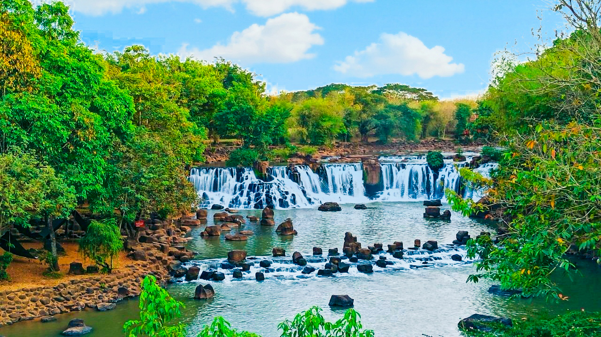
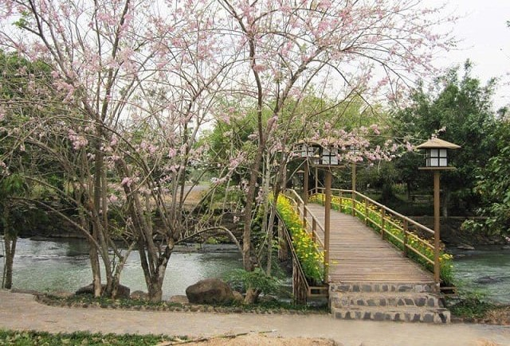
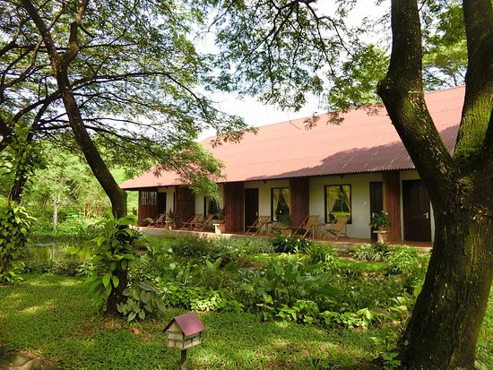

Khu Du Lịch Thác Giang Điền
1. Tổng quan về khu du lịch thác Giang Điền
Quần thể khu sinh thái Giang Điền có diện tích lên tới 67 ha và được thiết kế thành nhiều công trình, tiểu cảnh xinh đẹp thu hút du khách hàng năm. Đặc biệt, nơi đây còn gắn liền với truyền thuyết tình yêu bất diệt của lứa đôi. Thác Giang Điền được hình thành bởi ba dòng thác: thác Chàng, thác Nàng và chính dòng thác.
Truyền thuyết kể lại rằng, xưa có đôi nam nữ yêu nhau nhưng bị cấm cản và họ đã nguyện chết cùng nhau để bảo vệ trọn vẹn tình yêu này. Dòng suối hai người trầm mình chính là thác Chàng, thác Nàng ngày nay, hay người ta còn gọi là thác Đôi. Nhiều cặp tình nhân khi đi du lịch Đồng Nai thường tìm đến đây (thác Giang Điền) như để cầu mong cho tình yêu của họ luôn được bền chặt.

2. Những hoạt động vui chơi
Điều tuyệt vời nhất khi đến nơi đây là được đắm mình trong làn nước mát lạnh dưới chân thác Giang Điền. Tuy nhiên, bạn nên đến đây vào mùa khô để tận hưởng làn nước trong mát và êm đềm vì nếu là mùa mưa thì nước chảy rất xiết và cuốn theo nhiều phù sa.
Ngoài khu thác nước thì du khách còn có thể đi tham quan nhiều địa điểm thú vị khác như: đường Hoàng Hoa, hồ Tuyền Lâm, khu vườn mùa đông, đồi hoa, công viên tình yêu, nhà Rông… Cùng nhau dạo chơi tận hưởng không khí trong lành, thư thái giúp bạn quên đi những ưu phiền cuộc sống. Và không sáng tạo cho mình những bức hình độc đáo giữa khung cảnh non nước hữu tình.

Với không gian rộng lớn cùng nhiều công trình vui chơi giải trí hấp dẫn, thác Giang Điền là điểm dừng chân lý tưởng mỗi cuối tuần. Tại đây, bạn không chỉ được hòa mình cùng thiên nhiên trong lành mà còn được trải nghiệm những trò chơi vô cùng thú vị. Ngoài ra du khách còn có thể tham gia hoạt động đạp xe hay ngồi xe đi khám phá không gian khu du lịch sinh thái, cũng rất thú vị đó.

3. Nơi ở như nhà nghỉ, khách sạn
Nếu bạn là người yêu thiên nhiên và thích các hoạt động dã ngoại thì có thể lựa chọn hình thức cắm trại qua đêm ở khu du lịch sinh thái này. Khi vạn vật chìm vào bóng tối, cả khu lều cùng nhau đốt lửa trại giao lưu, ca hát… Đây là cơ hội tốt để làm quen và kết bạn với những con người thú vị.

Nếu không quen ở lều trại, thì bạn cũng có thể lựa chọn phòng trong khách sạn ở đây. Có nhiều rất nhiều loại phòng với các tiêu chuẩn chất lượng khác nhau để bạn tham khảo. Tuy nhiên, trong trường hợp bạn có dự định ở lại Đồng Nai lâu ngày để thăm thú các địa điểm nổi tiếng thì nên lựa chọn thuê các nhà nghỉ, khách sạn bên ngoài để thuận lợi cho việc di chuyển.